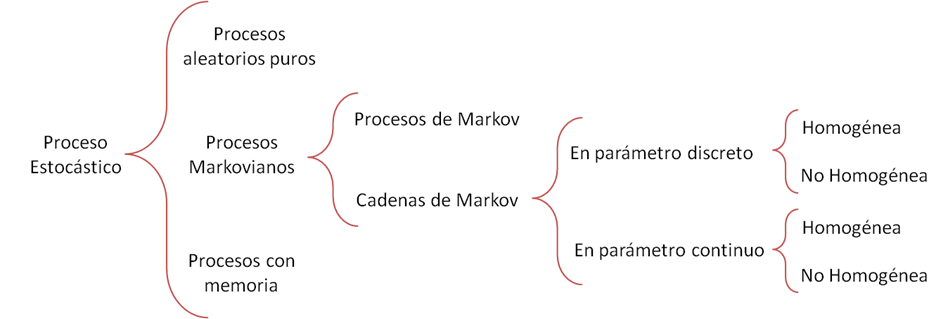

Introducción
Las cadenas de Markov tienen la propiedad particular de que las probabilidades que describen la forma en que el proceso evolucionará en el futuro depende sólo del estado actual en que se encuentra el proceso y, por lo tanto, son independientes de los eventos ocurridos en el pasado.
Definiciones
Un proceso estocástico es un modelo matemático que describe el comportamiento de un sistema dinámico, sometido a un fenómeno de naturaleza aleatoria. La presencia de un fenómeno aleatorio hace que el sistema evolucione según un parámetro, normalmente el tiempo, que cambia de estado en forma probabilística. En otras palabras, al realizar una serie de observaciones del proceso en diferentes ocasiones y bajo idénticas condiciones, los resultados de las observaciones serán, en general, diferentes. Por esto es necesario definir: x=f(t) → Variable aleatoria (representa una característica mensurable de los distintos estados que puede tomar el sistema) p(x,t) → Probabilidad asociada a ‘x’ (representa la probabilidad del estado asociado ‘x’ siendo ‘t’ el tiempo)
Clasificación de Procesos Estocásticos
En los Procesos aleatorios puros se cumple P(x_(t+Œît),t+Œît). Es decir, la probabilidad de que el sistema se encuentre en un estado cualquiera xt+ùõ•t es independiente de los estados anteriores. Teniendo en cuenta lo antes mencionado, es un proceso sin memoria porque la probabilidad de un estado no depende de la historia de los estados en etapas anteriores. Ej. Control de la calidad de la materia prima recibida en lotes independientes muestreados al azar.
En los Procesos con memoria o de orden superior se necesita saber más que el estado inmediatamente anterior para predecir qué pasará en un estado futuro. Se cumple lo siguiente:
P(x_(t+Δt),t+Δt)= P(x_(t+Δt),t+Δt/x_(t+Δtn),t+〖Δt〗_n )
En cambio, en el caso de un Proceso Markoviano, se cumple que:
P(x_(t+Δt),t+Δt)= P(x_(t+Δt),t+Δt/x_t,t)
Es decir, Markov propone restringir el problema en n=1. De esta forma, la probabilidad de que el sistema esté en un estado cualquiera x_(t+Δt) en t+Δt dependerá, y se podrá calcular, conociendo el estado inmediatamente anterior x_t
A estos procesos se los suele caracterizar como procesos en los cuales “dado el presente (x_t) el futuro (x_(t+Δt)) es independiente del pasado (x_(t-Δtn))”
Nos concentraremos en los Procesos Markovianos. Dependiendo del tipo de variable podremos decir que estamos en presencia de un Proceso de Markov cuando la variable aleatoria representa una magnitud continua (fuerza, tensión, energía eléctrica, etc.). En estos casos, el espacio de los estados de ‘x’ deberá ser un intervalo de números reales. En cambio cuando la variable aleatoria representa una magnitud discreta (cantidad de personas, de materiales, etc.), el espacio de estados de ‘x’ deberá ser una secuencia finita o numéricamente infinita de enteros y se hablará de una Cadena de Markov.
Dentro de las llamadas cadenas de Markov, si las observaciones se realizan en cualquier instante del continuo (t≥0), se habla de una Cadena de Markov de parámetro t (tiempo) continuo, mientras que en otras ocasiones las observaciones se efectúan en determinados instantes de tiempo y por lo tanto diremos que estamos en presencia de una Cadena de Markov de parámetro t (tiempo) discreto.
Con referencia espec√≠ficamente a las cadenas de Markov de parámetros de tiempo discretos o continuos, diremos que son Homog√©neas las cadenas cuya probabilidad condicional de transici√≥n del estado ‚Äòi‚Äô al estado ‚Äòj‚Äô s√≥lo depende del un ùõ•t
Es decir, las probabilidades de transición son estacionarias lo que implica que no cambian con el tiempo.